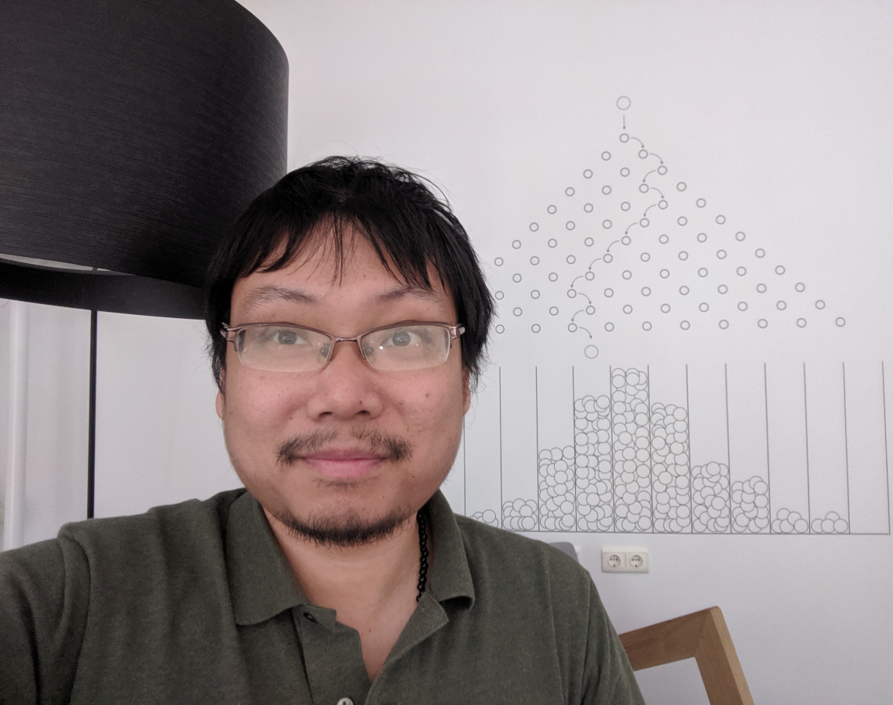
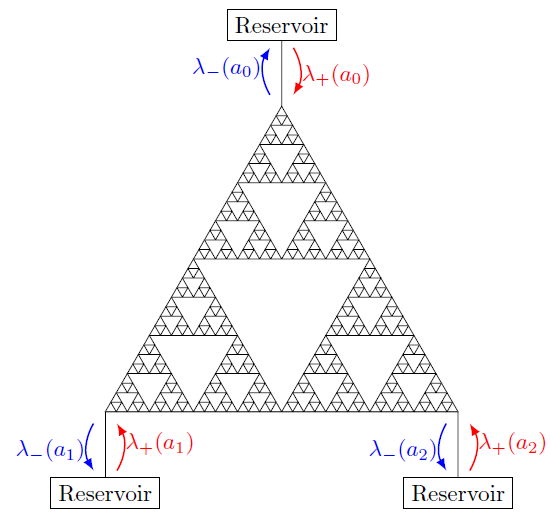
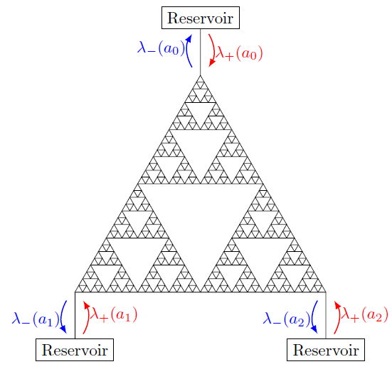
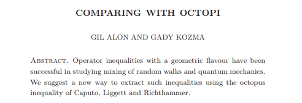
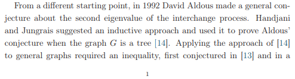
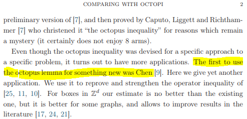

×

May '19, DIAM, TU Delft | '19: W/Sp, Su | '18: Europe, Asia
Brugge | Chicago | Kinderdijk | Lisboa | Montréal | Paris | Santa Monica
|

×
|
May '19, DIAM, TU Delft | '19: W/Sp, Su | '18: Europe, Asia |
Brugge | Chicago | Kinderdijk | Lisboa | Montréal | Paris | Santa Monica |
Research themes: Probability, Stochastic Processes, and Analysis of (S)PDEs, with a view to solving problems from Mathematical Physics or Theoretical Computer Science.
Current research focus: Interacting particle systems on graphs and lattices. Analysis of microscopic two-particle correlations, potential theory, macroscopic scaling limits, and mixing time cutoffs.
My research is currently being supported by an NSF DMS Probability grant (DMS-1855604).
Upcoming (virtual) travel

 

"The first to use the octopus lemma [of Caputo-Liggett-Richthammer] for something new was Chen." (G. Alon & G. Kozma, arXiv:1811.10537)
  Random walks, electric networks, moving particle lemma, and hydrodynamic limits (abstract, talk slides)
Two bibles which I have studied religiously---and struggled with---for the past 5 years. They have helped my research in invaluable ways. If you are stuck interpreting passages in these bibles, I offer my translation service upon request.
{kind=link}
{kind=link}
{kind=link}
{kind=link}
{kind=link}
{kind=link}
{kind=link}
{kind=link}